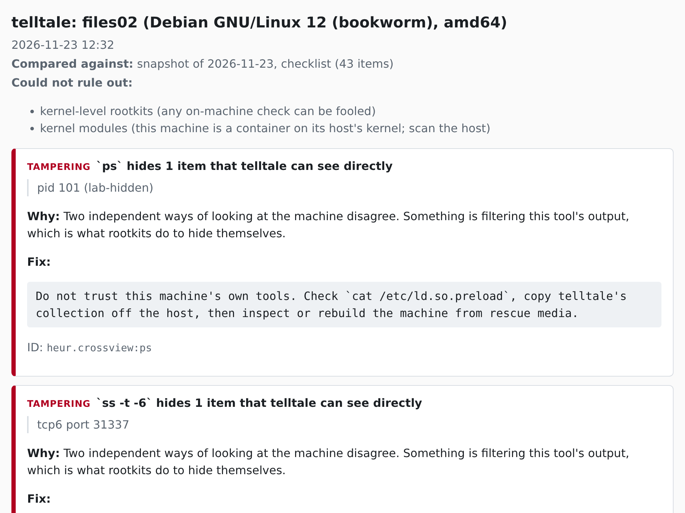

Free and open source, Apache-2.0
telltale: has someone backdoored this machine?
telltale looks for what an intruder leaves behind on a Linux machine to get back in, and tells you what changed, why it matters and how to undo it.
- Debian and Ubuntu
- amd64 and arm64
- One static binary
- Reports, never fixes
Carry it to a machine and run it by hand, or run a server that visits your machines over SSH. It is a new project: read Good to know before you rely on it.

01 / What it checks
Four ways of looking, one question.
Each check catches what the others miss. Together they answer one question about a machine: has someone changed it to keep a way in?
Since the snapshot
Take a snapshot while the machine is clean and keep it somewhere else. Every later check shows what changed since: accounts, SSH keys, sudo rules, cron jobs, systemd units, PAM, listening programs, and every file in the system directories.
Against the signed packages
System files are compared with the files in the distribution's own signed packages, fetched from the archive and checked with keys built into telltale. A changed file that a package update explains is set apart quietly, so updates do not bury what matters.
A hardening checklist
44 settings any well-run machine should have, from the DISA STIG where a rule applies and from the settings attackers loosen to keep a way in: root login over SSH, password-free sudo, the firewall.
Suspicious on any machine
A second account with root's user id, ld.so.preload, programs running from /dev/shm or deleted while running, startup files that open a shell to somewhere else, and processes or ports the machine's own ps and ss hide.
02 / The rule
Right then, wrong now: that is tampering.
The checklist and the snapshot meet in one rule. Attackers loosen settings to keep their way back in. So a checklist item that passed in the snapshot and fails now is not just a weak setting: the setting was right when the machine was known to be clean, and someone changed it.
Every finding is ranked, and comes with why it matters, its evidence (which file, which line, before and after) and the exact command that would fix it, for a person to read and run.
A checklist item that held in the snapshot and fails now, a system file that does not match its signed package, or something the machine's own tools hide.
A new root SSH key, a cron job that calls out, an unknown PAM module, a setuid program no package ships.
A checklist item that is not met (and, with a snapshot, was not met then either).
Worth a look, not a sign of trouble on its own: a newly installed package, or a root SSH key on a machine with no snapshot to say whether it is new.
03 / Real reports
Not mock-ups.
telltale is built against a Docker test lab that is part of the project: clean Debian and Ubuntu machines, and broken ones with backdoors planted on them. Each broken machine has a written list of what telltale must report, and the tests check every report against it.
The reports page shows what telltale printed for four of those machines: two break-ins told step by step, the same machine checked without a snapshot, and a clean machine. CI makes them for every release, with the release's telltale; the reports page names the build. The machines' names are made up, and everything planted on them is a harmless stand-in that only leaves the traces a real backdoor would.
04 / Trust
It assumes the machine may be lying.
It brings its own code
One static binary that loads none of the machine's libraries, so a replaced libc or an ld.so.preload entry cannot hook it.
It looks for itself
It reads /proc, /sys and the filesystem directly instead of trusting ps, ss or ls, and reports it when those tools hide something.
Keys are built in
The package database's checksums and the machine's current keyrings are never proof of anything: root can edit both.
The snapshot stays away
You keep the snapshot off the machine, encrypted, or the server keeps it. It is never written to the machine's disk.
05 / Two ways to run it
Carry it, or let a server visit.
Carry it
The carry download, about 14 MB
Copy telltale to a machine, run it, read the report. Nothing is installed. It also checks a machine telltale has never seen, such as one you already suspect: without a snapshot it still checks the packages, the checklist and what is suspicious on any machine.
Carry itA server that visits
The full build or the .deb package
A server on your network keeps the snapshots and the history. On a schedule it logs in to each machine over SSH, copies a collector over, runs it, takes the results back and deletes it. It has a web UI, alerts to bubbles and an MCP server for AI assistants.
Run the server06 / Good to know
What it cannot tell you.
- A kernel-level rootkit can fool any check that runs on the machine, telltale included. Every report says so. The answer is to check the disk from another machine, which is planned for a later version.
- It checks one moment. It does not watch the machine between checks.
- Debian 12 and 13 and Ubuntu 22.04 and 24.04 only. Raspberry Pi OS and the Red Hat family are not supported yet.
- arm64 is tested under emulation, and nothing has been run on real arm64 hardware yet. The kernel module checks are tested in a virtual machine by hand, not in CI.
- Ubuntu Pro (ESM) packages cannot be verified yet, and a third-party repository is verified only with a key telltale trusts for it.
- Without root it cannot read
/etc/shadow, other users' processes or the firewall. It still runs, and says which checks it skipped. - It reports and never fixes. The fix commands are text for you to read and run.
- It is a new project. Tell us what you find on GitHub.